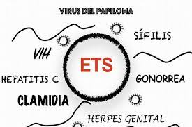

Salud sexual y reproductiva (SSSR).
La SSSR nos permite analizar la pertinencia de los diferentes métodos anticonceptivos y de protección, según las condiciones de cada persona y tomar conciencia sobre los derechos y responsabilidades que implica la vivencia de la sexualidad con respecto a sí mismo, a otros y al entorno, ademas nos ayuda a identificar las infecciones de transmisión sexual y su impacto en su salud.
Es ampliamente aceptado que hombres y mujeres tienen el derecho de elegir cuántos hijos tener, pero hay millones de personas que no disfrutan de ese derecho y son vulnerables al embarazo no planeado. Cada 8 hrs una adolescente de 14 años se embaraza, cada 3 hrs una de 15 años, cada 1-2-hrs una de 16 años y cada 45 min una adolescente de 17 años se embaraza.
Ventajas de la Lactancia Materna
Métodos anticonceptivos y de protección
Anticoncepción: Es un conjunto de métodos y técnicas que permite a mujeres y hombres ejercer y disfrutar de su sexualidad independientemente de la función reproductiva.
- Abstinencia.
- **Esterilización femenina**.
- **Anticonceptivos orales**. Ver detalle
- Implante subdérmico de etonogestrel (Implanon). Ver detalle
- DIU, Dispositivos intrauterinos (Mirena y T cobre).
- Condón femenino.Ver detalle
- Condón masculino.
- Inyectable de 1 y 3 meses.Ver detalle

Las infecciones de transmisión sexual (ETS).
- Sífilis
- Virus del papiloma humano (VPH)
- Virus del herpes simple (VHS)
- Tricomonosis.
- VIH/SIDA
- Favorece el control de nuevos embarazos
- Disminuye gastos familiares
- Mayor satisfacción personal y apego con el bebé.